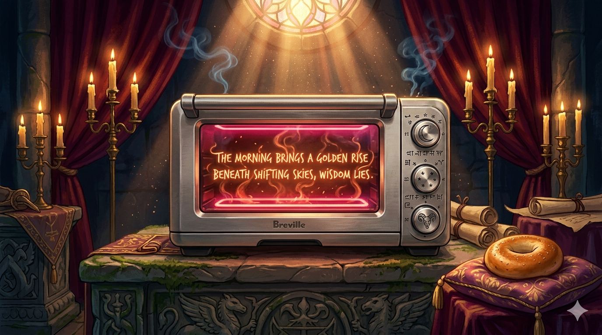

● Pronouncement
·
just now
Scrolls consulted 4 passages · ranked by resonance expand
The oracle speaks only of the BOV900. For all other ovens, consult thine own gods.

the heating coil shall answer — in good time, and with citations
The oracle speaks only of the BOV900. For all other ovens, consult thine own gods.
Pronouncements that have survived the kitchen. Trusted, repeatable, blessed.